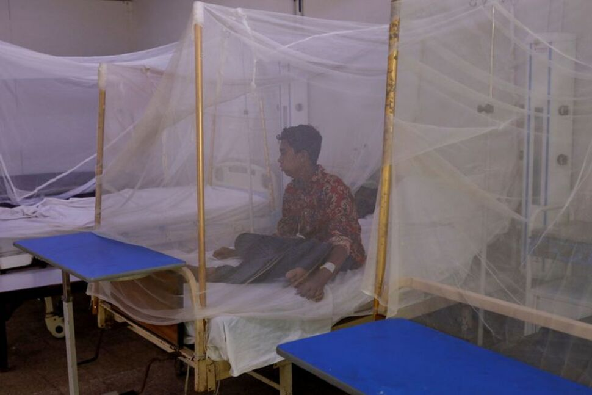
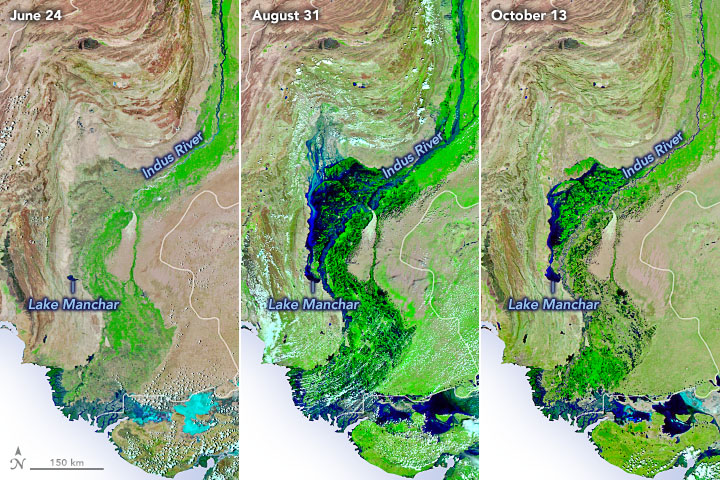

<!DOCTYPE html>
<html lang="en" dir="ltr">
  <head>
    <meta charset="utf-8">
    <link rel="stylesheet" href="style.css">
    <title>Pakistan Floods</title>
  </head>
  <body class="contentPages">
    <div class="mainContainer">
      <div class="navWrapper">
        <div class="menu">
          <div class="navLinkContainer1">
            <p class="title">Pakistan Floods</p>
          </div>
          <div class="navLinkContainer"><a href="index.html">Home</a></div>
          <div class="navLinkContainer"><a href="page2.html">Current Situation</a></div>
          <div class="navLinkContainer"><a href="page3.html">Past Events</a></div>
          <div class="navLinkContainer"><a href="page4.html">How To Help</a></div>
        </div>
      </div>
      <div class="container">
        <div class="mainContent">
          <h1 id="title">Current Situation In Pakistan</h1>
          <p id="content">According to Pakistan's National Disaster Management Authority, floods brought on by unusually heavy monsoon rains have resulted in 33 million people being affected, 1,695 fatalities, more than 2 million homes being damaged, and the displacement of hundreds of thousands who are now living in tents or makeshift housing.
          <br>
          <br>
          The United Nations' humanitarian organization has issued a warning that the approximately 5.7 million flood survivors in Pakistan will experience a severe food crisis over the next 3 months.
          <br>
          <br>
          As reported by The World Health Organization, 16 percent of the total of the population had experienced moderate to severe food insecurity before to the floods.</p>
          <div class="videoContainer">
            <iframe width="560" height="315" src="https://www.youtube.com/embed/YZG8M0EU7u0" title="YouTube video player" frameborder="0" allow="accelerometer; autoplay; clipboard-write; encrypted-media; gyroscope; picture-in-picture" allowfullscreen></iframe>
          </div>
          <h2>Areas Affected</h2>
          <p id="content">Sherry Rehman, Pakistan's minister for climate change, claims that the crop of onions, along with corn and rice has been devastated to a degree of almost 70%.
          <br>
          <br>
          With markets in China and Africa, Pakistan is the fourth-largest exporter of rice in the world.
          Wheat is consumed by almost every household in Pakistan, but with such a large agricultural area devastated, the wheat harvest may also be under jeopardy.
          <br>
          <br>
          Due to the post-pandemic disruption of supply chains and the conflict in Ukraine, a significant producer of important commodities to the world, prices of food are already under pressure.
          <br>
          <br>
          Though other regions of the nation are also badly impacted, Sindh and Balochistan have also sustained the most damage to infrastructure and human lives.
          </p>
          <div class="affected">
            
          </div>

          <h2>Public infrastructure</h2>
          <p id="content">
            The severe damage to the nation's telecoms, bridges, and highways only makes the humanitarian crisis worse. More than 8,000 miles (13,000 kilometers) of roads and 410 bridges have been destroyed by the floods, making it harder for people to find safety and go to markets. The worst-affected province is Sindh, which accounts for 64% of all road damage and 40% of all bridge damage nationally.
            <br>
            <br>
            The train system in Pakistan suffered "unprecedented devastation" as a result of the floods. Due to flash floods and monsoon rains, Pakistan Railways is losing over $385,025 (90 million rupees) every day.
          </p>
          <h2>Shelter</h2>
          <p id="content">
            Over 2 million dwellings have been completely or partially damaged by the floods as of October 4—a startling number. Sindh is the province most worst hit, with 1.68 million dwellings either completely or partially destroyed.
          </p>
        </div>

        <div class="suggestions">
          <h2>Similar Articles</h2>
          <a id="link" href="https://www.nytimes.com/2022/09/15/climate/pakistan-floods-global-warming.html">
          <div class="articles">
            
            <p id="imageText"><b>The New York Times</b><br><br>In a First Study of Pakistan’s Floods, Scientists See Climate Change at Work</p>
          </div>
          </a>

          <a id="link" href="https://www.theguardian.com/world/gallery/2022/oct/13/pakistan-floods-in-pictures-gideon-mendel-sindh-province-drowning-world">
          <div class="articles">
            
            <p id="imageText"><b>The Guardian</b><br><br>Pakistan floods:‘Everything we own has been washed away’</p>
          </div>
          </a>

          <a id="link" href="bloomberg.com/news/articles/2022-10-09/how-pakistan-s-flood-crisis-bends-climate-talks-towards-reparations">
          <div class="articles">
            
            <p id="imageText"><b>Bloomberg</b><br><br>How Pakistan’s Flood Crisis Bends Climate Talks Towards Reparations</p>
          </div>
          </a>


          <a id="link" href="https://news.un.org/en/story/2022/09/1127051">
          <div class="articles">
            
            <p id="imageText"><b>UN News</b><br><br>Pakistan floods: Six month wait for water to recede, warn relief agencies</p>
          </div>
          </a>

          <a id="link" href="https://www.bbc.com/news/world-asia-62830771">
          <div class="articles">
            
            <p id="imageText"><b>BBC</b><br><br>HPakistan floods put pressure on faltering economy</p>
          </div>
          </a>

          <a id="link" href="https://www.nature.com/articles/d41586-022-02813-6">
          <div class="articles">
            
            <p id="imageText"><b>Nature</b><br><br>Why are Pakistan’s floods so extreme this year?</p>
          </div>
          </a>

          <a id="link" href="https://www.npr.org/2022/09/19/1123798981/climate-change-likely-helped-cause-deadly-pakistan-floods-scientists-find">
          <div class="articles">
            
            <p id="imageText"><b>NPR</b><br><br>Climate change likely helped cause deadly Pakistan floods, scientists find</p>
          </div>
          </a>

          <a id="link" href="https://www.usnews.com/news/world/articles/2022-09-21/pakistan-flood-victims-hit-by-disease-outbreak-amid-stagnant-water">
          <div class="articles">
            
            <p id="imageText"><b>US News</b><br><br>Malaria and Diseases Spreading Fast in Flood-Hit Pakistan</p>
          </div>
          </a>

          <a id="link" href="https://www.eastasiaforum.org/2022/09/23/pakistan-floods-do-nothing-to-dampen-climate-change/">
          <div class="articles">
            
            <p id="imageText"><b>East Asia Forum</b><br><br>Pakistan floods do nothing to dampen climate change</p>
          </div>
          </a>

          <a id="link" href="https://www.reuters.com/world/asia-pacific/pakistan-floods-have-affected-over-30-million-people-climate-change-minister-2022-08-25/">
          <div class="articles">
            
            <p id="imageText"><b>Reuters</b><br><br>Pakistan floods have affected over 30 million people: climate change minister</p>
          </div>
          </a>

          <a id="link" href="https://earthobservatory.nasa.gov/images/150470/flood-woes-continue-in-pakistan">
          <div class="articles">
            
            <p id="imageText"><b>Earth Observatory</b><br><br>Flood Woes Continue in Pakistan</p>
          </div>
          </a>

          <a id="link" href="https://disasterphilanthropy.org/disasters/2022-pakistan-floods/">
          <div class="articles">
            
            <p id="imageText"><b>Center for Disaster Philanthropy</b><br><br>2022 Pakistan Floods</p>
          </div>
          </a>
        </div>
      </div>

    </div>
  </body>
</html>
